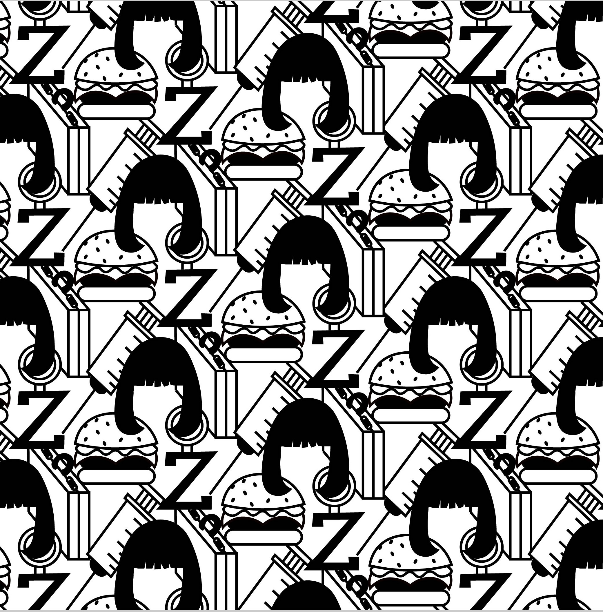
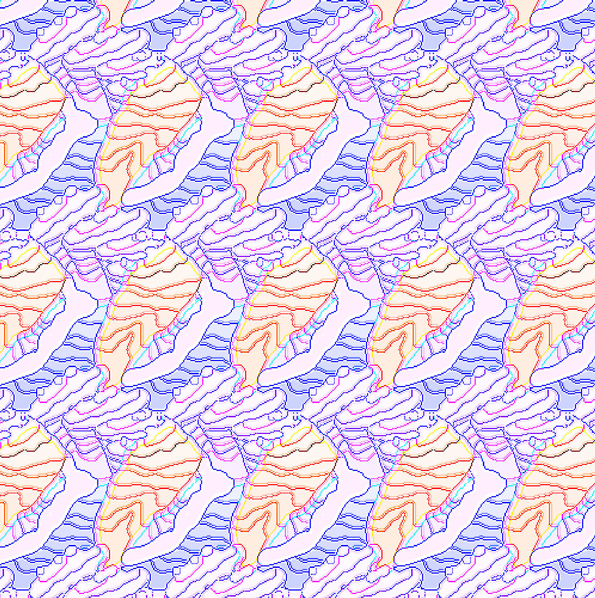

Graphic Designs
All of these images were created using a combination of Adobe Illustrator and Adobe Photoshop.

This image was digitially traced and painted in Adobe Illustrator for CGT 118.

This pattern was created using Illustrator for AD 105. The assests were created seperately in Illstrator. This was inspired by Pulp Fiction.
This piece was created using Illustrator for AD 105. The assests were created seperately in Illstrator.


This pattern was created using Illustrator for AD 105. The assests were created seperately in Illstrator.
This is done by me using Illustrator and Photoshop. I reimagined my family as Bob's Burgers characters. These characters belong to and are trademarked by Fox, I do not claim them as my own.